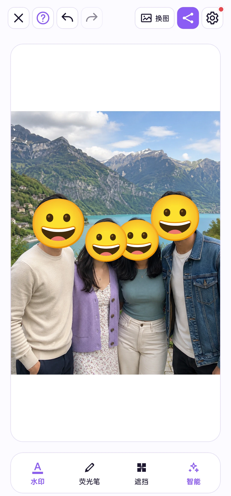

图片编辑
人脸贴纸与文字水印
用表情遮住人脸，或为图片添加说明用途的重复文字。
跟着操作一遍
点击时间可跳到对应步骤，也可全屏查看操作细节。
人脸贴纸
打开底部“遮挡”，启用人脸贴纸，再点击识别到的人脸选择表情。“清除”只移除当前人脸的贴纸。贴纸开关对整组图片生效，下次使用时会保留。
用表情贴纸遮挡已识别的人脸。每张脸都可以选择不同表情，让合照保留原有的趣味。


水印
打开底部“水印”，先输入文字，再启用水印。在预览中调整样式；文字水印只属于当前图片，保存和分享时都会写入副本。
在图片上添加重复文字水印，说明图片用途或使用范围。内容、颜色、透明度、大小、角度和疏密均可调整。